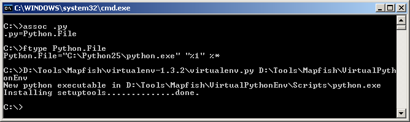

Minifying the Mapfish Client on Windows¶
- date:
2010-01-28 08:00
- author:
admin
- category:
javascript, mapfish, web development
- tags:
client-side, javascript, mapfish, minify, performance
- slug:
minifying-the-mapfish-client-on-windows
- status:
published
This page has 72 external Javascript scripts. Try combining them into one.¶
 My YSlow Firefox
plug-in was telling me that I had included too may JavaScript files, and
that they should be combined into a single-file, and
minified.
The default setup of Mapfish has a single script include
(mfbase\mapfish\MapFish.js), but this script automatically loads
around 40 further scripts.
My YSlow Firefox
plug-in was telling me that I had included too may JavaScript files, and
that they should be combined into a single-file, and
minified.
The default setup of Mapfish has a single script include
(mfbase\mapfish\MapFish.js), but this script automatically loads
around 40 further scripts.
I tried a couple of unsuccessful attempts at copying and pasting various Mapfish JS files into an online JavaScript compressor. However when referencing the minified file I kept getting “undefined” errors from various Mapfish plugins and OpenLayer objects.
Initially I was looking to download a ready-made “compiled” MapFish file, but was unable to find a version online. I have uploaded azipped version so if you want the file without going through the steps below you can download a copy. Note that if you have made any modifications to the MapFish files then these will not be available, and there are no guarantees it will work.
on the Mapfish site. This process uses JSBuild which is part of JSTools - “a collection of python scripts for packaging and efficiently serving javascript.” | Unfortunately these instructions require a Linux operating system, and I’m using Windows. I eventually managed to “translate” these into Windows commands, and have documented the steps below.
Step 1 - Install Python for Windows¶
First of all if Python is not installed on your system, then get the MSI installer from the Python site. I used version 2.5.4, so I’m not sure if the steps below work with later versions. Once it has been installed all .py extensions should be associated with the python interpreter. To check this you can run the following commands in a Windows command line prompt:
assoc.py
ftype Python.File
 ¶
¶

Step 2 - Create a Virtual Python Environment¶
This step creates an isolated Python environment for JSTools. Using this “virtual” environment avoids using wrong script versions and references. The Mapfish instructions for Linux were as follows:
$ wget 'http://pypi.python.org/packages/source/v/virtualenv/virtualenv-1.3.2.tar.gz'
$ tar xvzf virtualenv-1.3.2.tar.gz
$ python virtualenv-1.3.2/virtualenv.py env
$ source env/bin/activate
These rougly translate into Window’s speak as:
Download the VirtualEnv installer fromhttp://pypi.python.org/packages/source/v/virtualenv/virtualenv-1.3.2.tar.gz (wget is simply a Linux program that handles the downloading of files).
Unzip the downloaded file (for example using 7-zip for Windows)
Run the following command in the Windows command prompt. Change the first parameter to point to the location of virtualenv.py you just downloaded, and the second to a folder where you want to create your virtual Python environment.
D:\Tools\Mapfish\virtualenv-1.3.2\virtualenv.py D:\Tools\Mapfish\VirtualPythonEnv
Finally run the activate.bat file which should have been created by the above steps in D:\Tools\Mapfish\VirtualPythonEnv\Scripts\activate.bat
{kind=link}
Step 3 - Install the JSTools¶
Again from the Windows command line, change your current directory to the newly created Scripts folder in your virtual environment setup.
cd D:\Tools\Mapfish\VirtualPythonEnv\Scripts\
Next run the following command (again from the Windows command line):
easy_install.exe -i http://dev.camptocamp.com/packages/mapfish/all/index JSTools
{kind=link}
Trying to install the latest version of JSTools from http://github.com/whitmo/jstools/tarball/master caused errors (possibly due to Windows default download paths), but the rest of the steps worked fine with the JSTools available from the Mapfish (CamptoCamp) link used above.
Step 4 - Go Forth and Minify¶
The final step is to create the minified JavaScript itself. The Mapfish client download contains a configuration file to tell JSBuild which files to include in the single file script. It was at this stage I realised it may have been possible to manually combine these files in the correct order and run the online compressor, but now everything else was in place it was as well to use JSBuild.
First of all I modified the first few lines of the mfbase\openlayers\build\full.cfg file to point to the JavaScript files on my system. This may not have been necessary depending on where JSTools was run from, but this way worked!
[MapFish.js]
root =
D:/Tools/Mapfish/mapfish-client-1.2/mfbase/openlayers/lib
D:/Tools/Mapfish/mapfish-client-1.2/mfbase/mapfish
D:/Tools/Mapfish/mapfish-client-1.2/mfbase/geoext/lib
first =
OpenLayers/SingleFile.js
OpenLayers.js
...rest of the file remains the same
Next I ran the following command from Windows (making sure my current directory contained the jsbuild.exe). The -o parameter is the folder where you wish the single file to be created, and the second parameter points to the configuration file listing the JavaScript files.
jsbuild -o D:\Tools\Mapfish\ D:\Tools\Mapfish\mapfish-client-1.2\build\full.cfg
{kind=link}
A new MapFish.js was created!
I was then able to modify the .cfg file further to add in and minify my own application JavaScript files.
Step 5 - Test in Web Application¶
The previous reference to Mapfish could now be pointed to the newly created MapFish.js file:
<script type="text/javascript" src="js/MapFish.js"></script>
Although the file is now ~1MB it is smaller than the individual files combined, and it requires less server requests which improves page loading times. Most web servers (including IIS and Apache, but not IIS running on Windows XP) allow gzip compression which will reduce this file to around 250KB.
If you encounter any problems or steps I’ve missed then please let me know!
- orphan:
Comments¶
1. Richie Chwieroth **
Still can’t believe how much fun this is! If you haven’t gotten your family out for geocaching you are missing out on a wonderful chance to get the young ones outside and away from the video games.
ReplyAdd Comment